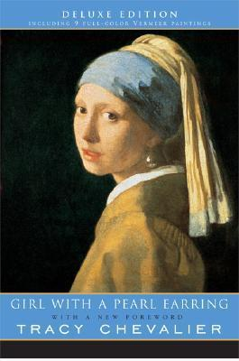

Harry Potter and the Prisoner of Azkaban (Harry Potter, #3)
Harry Potter, along with his best friends, Ron and Hermione, is about to
start his third year at Hogwarts School of Witchcraft and Wizardry.
Harry can't wait to get back to school after the summer holidays. (Who
wouldn't if they lived with the horrible Dursleys?) But when Harry gets
to Hogwarts, the atmosphere is tense. There's an escaped mass murderer
on the loose, and the sinister prison guards of Azkaban have been called
in to guard the school...
#2
Stardust
Alternate cover edition can be found here Young Tristran Thorn will do
anything to win the cold heart of beautiful Victoria—even fetch her the
star they watch fall from the night sky. But to do so, he must enter the
unexplored lands on the other side of

#3
Girl with a Pearl Earring
With precisely 35 canvases to his credit, the Dutch painter Johannes
Vermeer represents one of the great enigmas of 17th-century art. The
meager facts of his biography have been gleaned from a handful of legal
documents. Yet Vermeer's extraordinary paintings of domestic life, with
their subtle play of light and texture, have come to define the Dutch
golden age. His portrait of the anonymous Girl with a Pearl Earring has
exerted a particular fascination for centuries—and it is this magnetic
painting that lies at the heart of Tracy Chevalier's second novel of the
same title. Girl with a Pearl Earring centers on Vermeer's prosperous
Delft household during the 1660s. When Griet, the novel's quietly
perceptive heroine, is hired as a servant, turmoil follows.